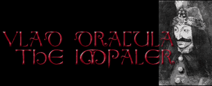

- impaler -
. Vlad Tepes Vlad Tepes (Dracula) The family tree of the Dracul dynasty. Off-site links Articles on Vlad the Impaler Dracula's Castle - History and pictures of Bran Castle which was the residence of Vlad the Impaler. Historical Dracula - the story of Vlad Tepes, or Vlad the Impaler. Vlad Dracula - Vlad the Impaler - the true story of Vlad the Impaler, the prince who inspired Bram Stoker's Dracula character.
|  |
 |
Legend and true history about Dracula intermingle and are being kept alive by tourist destinations like the Monastery of Snagov near Bucharest, or Bran Castle near Brasov. . From Democracy to Dictatorship The Communist Regime The Return to Democracy Appendices Dracula, between Legend and Reality The Monarchy in Romania The Orthodox Church in Romania Nicolae Ceausescu, a Modern Despot Dracula or Vlad the Impaler was the son of Vlad Dracul (1436-1442; 1443-1447) and grandson of Mircea the Old (1386-1418). Vlad Dracul was dubbed a knight of the Dragon Order by the Hungarian king. All the members of the order had a dragon on their coat of arms, and that is what brought him the nickname of Dracul (the Devil). |
|
He was also responsible for the erection of five monasteries, despite his atrocities. Vlad was the historical figure upon whom Bram Stoker partially built his title character in the novel Dracula. Tzepa means "spike" hence the Enlish version of his nickname Vlad the Impaler. Vlad the Impaler developed all sorts of physical and mental torture. He was often described in contemporary German, Byzantine, Slovanic and Turkish documents and popular horror stories as an awesome, cruel and possibly demented ruler (2). |
 |
He was also responsible for the erection of five monasteries, despite his atrocities. Vlad was the historical figure upon whom Bram Stoker partially built his title character in the novel Dracula. Tzepa means "spike" hence the Enlish version of his nickname Vlad the Impaler. Vlad the Impaler developed all sorts of physical and mental torture. He was often described in contemporary German, Byzantine, Slovanic and Turkish documents and popular horror stories as an awesome, cruel and possibly demented ruler (2). |
A good impaler site: http://www.irisa.fr